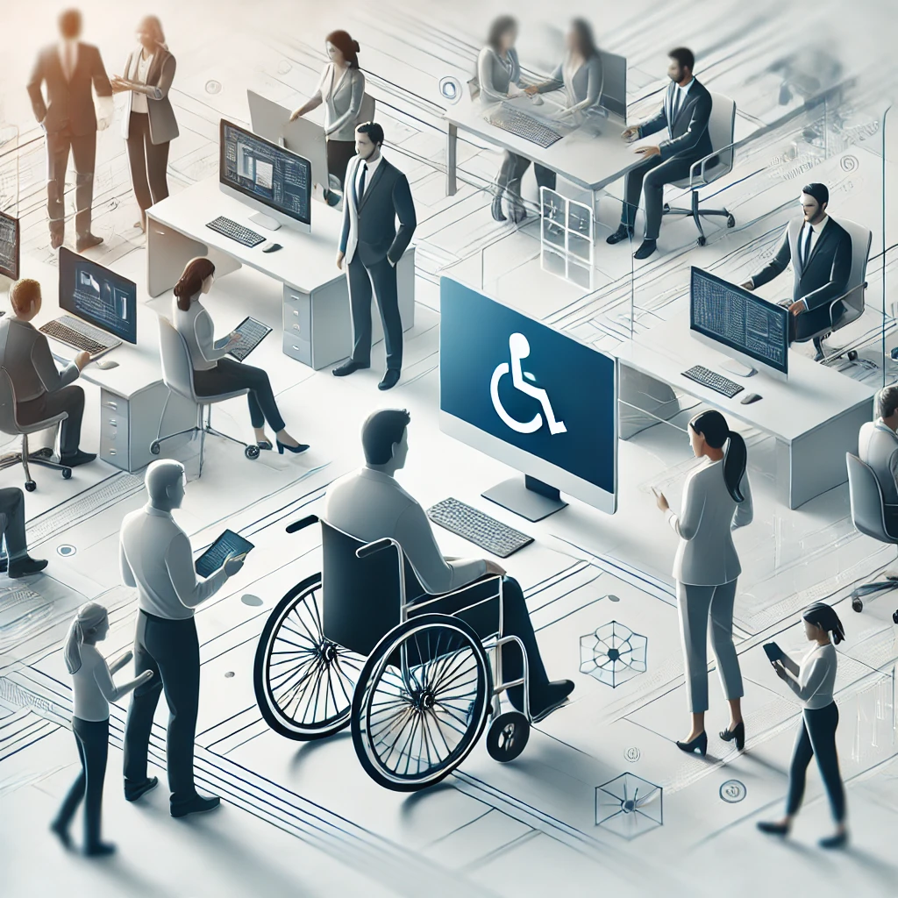
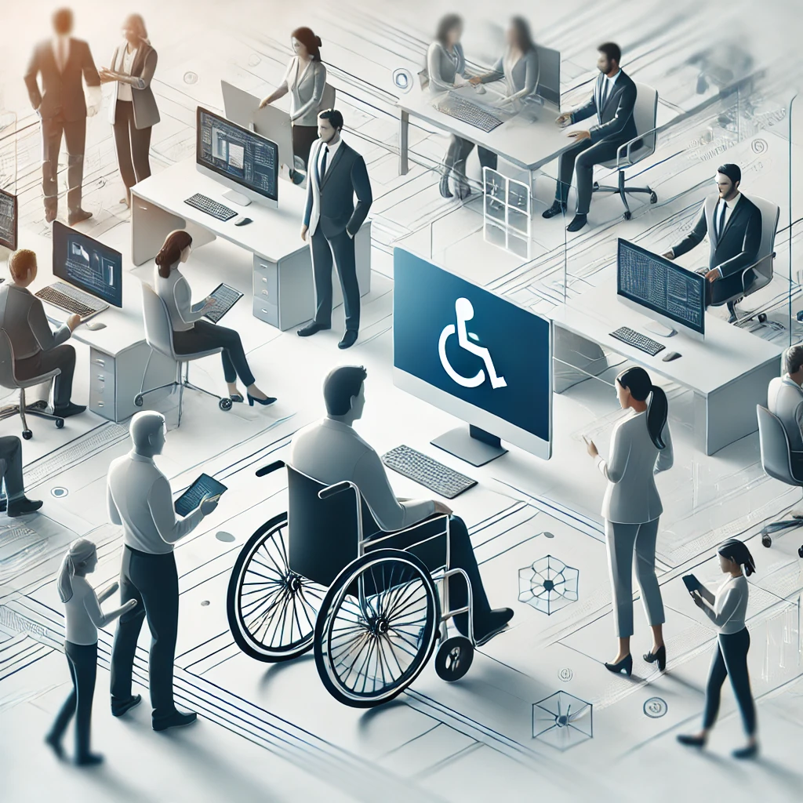

About Neurym
Neurym is an emerging startup focused on transforming the disability market through innovative software and technology solutions. We are developing a Minimum Viable Product (MVP) and conducting interviews to gather valuable insights, helping us craft software solutions that meet the needs of the disability community.
Our Goals
- Provide a one-stop platform marketplace for products and services for individuals with disabilities.
- Deliver accessible, real-time solutions for disability-related information, ranging from education to employment.
- Offer a platform for rating and reviewing disability services and resources with reliable feedback.
- Provide an engaging platform for discussing and sharing insights on disability services and experiences.
 
